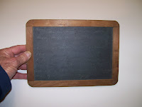

Great Lester's Slate
1/10/2010
{kind=link}

Nearly 40 years ago I received this small slate from W.S. Berger. W.S. told me the slate was one used by the Great Lester in his act. Although erased many years ago, faint chalk markings can still be seen on the slate. So I've kept it carefully protected and in storage all these years. After reading Dr. Klock's comments about his time spent with Lester, I mentioned the slate to him. The following was his reply:
From Dr. Larry Klock: "Hello Clinton, Regarding the slate, I think I know exactly how Lester used it. He did a 'memory' act, where the audience would yell out objects, someone would write them down and he would remember all of them--up to 100 items, in order, when asked. Usually he only did 20 or 30 objects, and this slate may have been used to record these. That's my best guess. Lester taught us this memory method (which used association), and I used it all through medical school to memorize the nerves, muscles, etc. It got me through many exams! I still remember precisely the system we learned right down to the very detail.
One day a friend of Lester came to the door and Lester met him and asked him to remove a card from a deck, which he did. I was sitting in an adjacent room but could see them. Lester introduced me as one of his students, and asked me to reveal the name of the card. As he did that, he "flashed" quickly the bottom card of the deck, and I knew immediately what the chosen card was. Of course, I waited a few seconds and concentrated hard and then revealed the card. His guest was flabbergasted and amazed. Lester had used a simple 'stacked deck' effect (which he had taught us previously), so all one had to do was to see the card next to the one chosen to know its identity. That kind of stuff went on all the time around his studio!"
* * * * * *